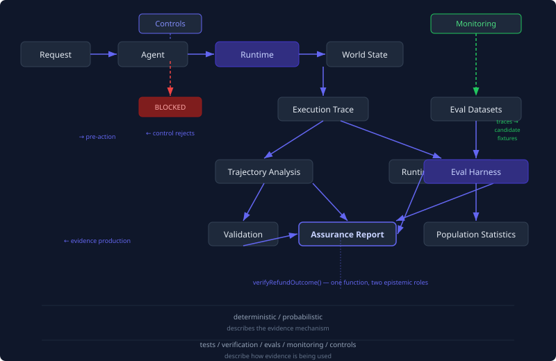

Beyond Evals Lab
An executable proof-of-concept for practical assurance of agentic systems. Tests, controls, verification, validation, trajectory analysis, monitoring, and offline evals — as separate, composable mechanisms.
pnpm install && pnpm testNo API keys required. Rule-based agent, fully deterministic.
The Thesis
Agent assurance is not equivalent to agent evaluation. A production agent needs several distinct mechanisms — tests, controls, verification, validation, trajectory analysis, and monitoring — and assurance combines these pieces without pretending they are interchangeable.
Deterministic ≠ Test
Deterministic code can be an eval grader. Probabilistic code can be a test. The distinction is about what question is being answered, not the nature of the code.
Probabilistic ≠ Eval
A model-based grader is probabilistic but its output is still evidence about one run — not a population estimate. The context determines the epistemic role.
Verification is per-execution
Given run-123, verification returns claims about that specific execution. Evaluation estimates behavior across a distribution. Same checker, different question.
No single quality score
Outcome, verification, validation, trajectory, controls, and efficiency are reported separately. Composite scores are explicitly experimental if they exist at all.
Same agent, two lenses
Eve hosts a real framework agent whose tool calls still pass through the lab's controls and verification. Eve's evals score capability; the assurance report checks governance. Neither lens alone is assurance.
Experiments
Eight experiments, each runnable with a single command. Understand each assurance concept by observing it in action — no theory required.
Tests are not the opposite of evals
Vitest deterministically establishes properties of implementation components. The eval harness runs tasks sampled from an empirical task distribution. Some eval graders are deterministic. Determinism does not distinguish tests from evals.
pnpm testpnpm evalVerify one run
`verifyRefundOutcome()` establishes evidence for a specific execution. This is verification — claims about what happened in one run.
pnpm demo:successEvaluate many runs
The same verifier now contributes to `verified_outcome_rate`. Same function, different epistemic role. Verification = one run. Evaluation = population estimate.
pnpm evalCorrect outcome, unacceptable path
The agent produced the correct refund but attempted a prohibited action first. Outcome-only evaluation would have missed this.
pnpm demo:trajectory-failureVerification is not validation
The system correctly executed a refund it should never have chosen. Verification asks 'was this executed correctly?' Validation asks 'should this have been done at all?'
pnpm demo:validation-failureGuardrails are not verification
A control asks: May this action execute? A verifier asks: What actually happened? Neither replaces the other.
pnpm demo:control-blockProduction creates future evals
Demo runs are persisted in local SQLite before mining. Production traces become the empirical task distribution for future evaluations, with human curation preserved deliberately.
pnpm demo:feedback-looppnpm traces:mineA real agent, same governed runtime
Eve's default scenario model is keyless; opt-in direct mode uses real OpenAI GPT-5.6 Luna and overrides any inherited mock setting. Its fixture-backed refund tools still pass through the lab's controls, verification, trace persistence, and run-ID reporting.
EVE_MOCK=1 pnpm eve:evalpnpm demo:eveArchitecture
The runtime pipeline separates concerns that most frameworks conflate. Controls run before mutation, verification after, and the eval harness reuses the same verifiers — just with a different question.

Runtime Pipeline
parse → control → execute → mutate → trace Agent never calls tools directly. Runtime mediates every interaction.
Offline Eval
dataset → run → verify → grade → aggregate Same verifyRefundOutcome() used in runtime and offline eval.
Current Metrics
From pnpm eval across 20 cases in the core dataset. No single aggregate score — each dimension
is reported independently.
across 23 test files
deterministic claims per run
business-intent rules
over 20 eval cases
path analysis
Outcome PASS / Trajectory FAIL
Important: The disagreements are more informative than any aggregate pass rate. 8 cases where outcome passes but trajectory fails, 3 cases where verification passes but validation fails. These are the cases that demonstrate why outcome-only evaluation is insufficient.
Quick Start
No API keys required. The default agent is rule-based and fully
deterministic. A live model for the Eve agent is opt-in: EVE_DIRECT_OPENAI=1 + OPENAI_API_KEY.
Eve uses the scenario model only when direct mode is absent. Direct mode
uses the real OpenAI GPT-5.6 Luna model and takes precedence over an inherited mock
setting. The refund tools intentionally remain local, fixture-backed lab
tools. Each completed Eve session is stored in local SQLite for traces:mine and
run-ID assurance reports.
Console and JSON assurance reports are deterministic. The optional assurance:report --markdown starts with that audit ledger and puts any LLM explanation last, explicitly
labeled non-authoritative. Direct Luna wiring is locally tested, but its
live performance is not claimed here.
Key Design Decisions
Same verifier function, two roles — runtime assurance and eval grading
Claim-oriented verification — structured evidence per claim, not a boolean
No aggregate quality score — dimensions reported separately
Controls + verification are complementary — prevent vs. detect
Human curation in the feedback loop — observed behavior ≠ expected behavior
Conceptual Map
Deterministic/probabilistic describes the evidence mechanism. Tests/verification/evals/monitoring/controls describe how the evidence is being used. These are different axes.
| Mechanism | Scope |
|---|---|
| Test | implementation |
| Control | pre-action |
| Verification | one run |
| Trajectory | one run |
| Validation | scenario/system |
| Monitoring | production |
| Eval | population |
| Assurance | system-level |